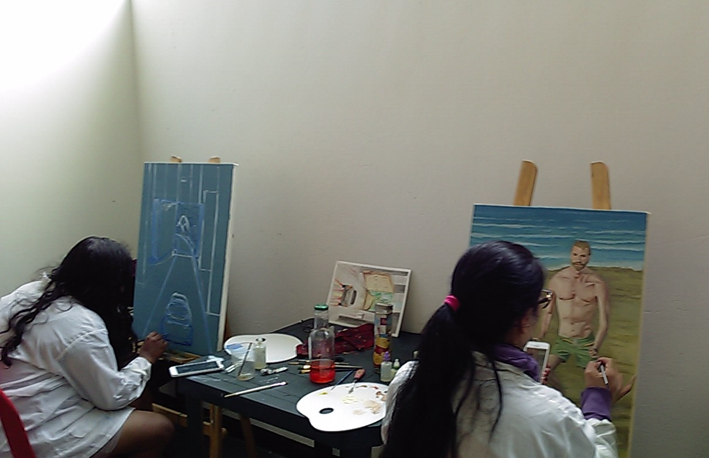

<!-- Modal del centro cultural 1 -->
<div class="modal fade" tabindex="-1" role="dialog" aria-labelledby="exampleModalLabel" aria-hidden="true"
  id='sanMiguelStudios'>
  <div class="modal-dialog modal-dialog-centered" role="document">
    <div class="modal-content">
      <div class="modal-header">
        <h5 class="modal-title" id="exampleModalLabel">San Miguel Studio</h5>
        <h6>Escuela Popular Mano Abierta - Reinaldo Castro</h6>
        <button type="button" class="close" data-dismiss="modal" aria-label="Close">
          <span aria-hidden="true">&times;</span>
        </button>
      </div>
      <div class="modal-body">
        <div class="card">
          <a href="#centrosCulturales">
            
          </a>

          <div class="card-body d-flex justify-content-between flex-column">
            <div>
              <h5>Descripción</h5>
              <p> Es una plataforma audiovisual creada por Sanmiguel Studios y La Secta Records, en el que los
                estudiantes de la Universidad Distrital hacen una muestra lirical de diferentes expresiones artísticas
                referente al hip hop y rap, teniendo en cuenta la libertad de expresión y las técnicas y herramientas
                que se refinan desde el proyecto curricular de Lengua Castellana para que obtenga una alta calidad en
                todas sus dimensiones.</p>
            </div>
            <div>
              <h5>Link de Contacto</h5>
              <a href="www.reinaldocastro.tk">
                Mi sitio web
              </a>
              <br>
              <a href="www.instagram.com/sanmiguelstudios/">
                <i class="fab fa-instagram"></i>
              </a>
              <a href="https://www.facebook.com/Escuelapopularmanoabierta/">
              <i class="fab fa-facebook-f"></i>
              </a>
              <a href="https://twitter.com/reinaldocastro3">
              <i class="fab fa-twitter"></i>
              </a>
            </div>
            <div>
              <h5>Dirección</h5>
              <p>Carrera 90 # 135 b 23 (Casa de juventud Diego Felipe Becerra)</p>
              <p>KRA 147 NO 150 - 26 ETAPA</p>
              <p>Cl. 139 #95b-18, Bogotá</p>
              <h5>Dirección Artística</h5>
              <p>Cra. 90 ##147-44, Bogotá (Casa de la Cultura de Suba)</p>
              <p>KRA 147 NO 150 - 26 ETAPA</p>
            </div>
            <div>
              <a href="#">Producto o servicio</a>

            </div>
          </div>
        </div>
        <div class="modal-footer">
          <button type="button" class="btn btn-secondary" data-dismiss="modal">Cerrar</button>
        </div>
      </div>
    </div>
  </div>
</div>


<!-- Final del modal del centro cultural 1 -->
